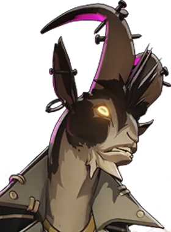

Tocar a Campainha Call Bell
Lança um sino que causa dano espiritual no impacto e explode depois, causando mais dano, retardando inimigos próximos e reduzindo sua precisão.
Tocar a Campainha Call Bell
Lança um sino que causa dano espiritual no impacto e explode depois, causando mais dano, retardando inimigos próximos e reduzindo sua precisão.
 Entrada Doorway
Coloca duas portas ligadas que levam jogadores e a maioria dos projéteis de uma para a outra até fecharem.
Entrada Doorway
Coloca duas portas ligadas que levam jogadores e a maioria dos projéteis de uma para a outra até fecharem.
 Carrinho de bagagem Luggage Cart
Envia um carrinho que causa dano espiritual e puxa heróis inimigos pelo caminho.
Carrinho de bagagem Luggage Cart
Envia um carrinho que causa dano espiritual e puxa heróis inimigos pelo caminho.
 Hóspede do Hotel Hotel Guest
Manda o corpo de um inimigo para uma estadia no Hotel Baroness e o devolve na saída; não sair a tempo causa dano espiritual extra.
Hóspede do Hotel Hotel Guest
Manda o corpo de um inimigo para uma estadia no Hotel Baroness e o devolve na saída; não sair a tempo causa dano espiritual extra.
Místico de apoio com habilidades de proteção de espaço.
História
Ele é correto, é educado, mas o humilde porteiro do The Baroness Hotel é mais do que aparenta.
Embora ele tivesse planejado experimentar a vida neste avião por apenas algumas semanas, The Doorman rapidamente descobriu que o setor de serviços de Nova York era uma ótima maneira de ver as estranhas demandas que agradam aos humanos.
História oficial do jogo, traduzida automaticamente para o português.
Números reais
Habilidades
Lança um sino que causa dano espiritual no impacto e explode depois, causando mais dano, retardando inimigos próximos e reduzindo sua precisão.
Coloca duas portas ligadas que levam jogadores e a maioria dos projéteis de uma para a outra até fecharem.
Envia um carrinho que causa dano espiritual e puxa heróis inimigos pelo caminho.
Manda o corpo de um inimigo para uma estadia no Hotel Baroness e o devolve na saída; não sair a tempo causa dano espiritual extra.
Builds mais usadas
16.500 partidas registradas com esta build.
Taxa Extra (800) · Explosão Mística (800) · Expansão Mística (800) · Botas de corrida (800) · Grão (800) · Espírito Extra (800) · Colecionador de Troféus (1.600) · Blindagem Espiritual (1.600) · Blindagem de Arma (1.600) · Barreira Reativa (1.600)
15.780 partidas registradas com esta build.
Rodadas de alta velocidade (800) · Taxa Extra (800) · Explosão Mística (800) · Tiro Místico (1.600) · Rodadas de Abertura (1.600) · Saúde Extra (800) · Regeneração Extra (800) · Tiro Restaurador (800) · Emblema do Encantador (1.600) · Healbane (1.600)
15.317 partidas registradas com esta build.
Rodadas de alta velocidade (800) · Taxa Extra (800) · Explosão Mística (800) · Expansão Mística (800) · Recarga rápida (3.200) · Espírito Melhorado (1.600) · Colecionador de Troféus (1.600) · Ala dos Guardiões (1.600) · Velocidade duradoura (1.600) · Dissipar Magia (3.200)
Confrontos reais
 Shiv — 51.7% de vitória
Shiv — 51.7% de vitória Mirage — 51.3% de vitória
Mirage — 51.3% de vitória Pocket — 50.9% de vitória
Pocket — 50.9% de vitória Silver — 50.8% de vitória
Silver — 50.8% de vitória Mina — 50.8% de vitória
Mina — 50.8% de vitória Paradox — 49.8% de vitória
Paradox — 49.8% de vitória
 Rat King — 37.7% de vitória
Rat King — 37.7% de vitória Graves — 38.2% de vitória
Graves — 38.2% de vitória Paige — 40.6% de vitória
Paige — 40.6% de vitória Victor — 40.9% de vitória
Victor — 40.9% de vitória Seven — 41.2% de vitória
Seven — 41.2% de vitória Kelvin — 41.5% de vitória
Kelvin — 41.5% de vitória
Ver a página de counters do The Doorman
O que upar primeiro
Nível por nível, na ordem que os jogadores mais usam em partidas de verdade. A porcentagem mostra quantos escolheram aquela habilidade naquele nível.
Melhores duplas
Heróis que mais ganham jogando junto com ele, em partidas reais (pelo menos 1.500 partidas juntos).
- Graves54,3%
- Rat King52,6%
- Seven52,2%
- Paige51,5%
- Victor50,6%
- Shiv39,7%
- Pocket41,3%
- Mirage41,3%
Rota (lane)
Na rota, cada lado joga em dupla. Estes números são de confrontos reais: a diferença de almas é medida com o jogo já começado, então almas no verde significa que ele costuma estar na frente.
- Graves — 33,5% de vitória −625 almas (164 partidas)
 Infernus — 36,7% de vitória −441 almas (218 partidas)
Infernus — 36,7% de vitória −441 almas (218 partidas)- Rat King — 37,0% de vitória −811 almas (1.361 partidas)
 Haze — 42,7% de vitória −864 almas (1.155 partidas)
Haze — 42,7% de vitória −864 almas (1.155 partidas) Abrams — 47,1% de vitória −334 almas (280 partidas)
Abrams — 47,1% de vitória −334 almas (280 partidas)- Mina — 48,0% de vitória −632 almas (521 partidas)
 Bebop — 48,4% de vitória −717 almas (608 partidas)
Bebop — 48,4% de vitória −717 almas (608 partidas) Vindicta — 54,7% de vitória −437 almas (598 partidas)
Vindicta — 54,7% de vitória −437 almas (598 partidas)

Billy — 57,0% de vitória −325 almas (256 partidas)- Vindicta — 54,7% de vitória −437 almas (598 partidas)
- Bebop — 48,4% de vitória −717 almas (608 partidas)
Histórico de win rate
21/09: 47.1% → 09/11: 47.2% → 28/12: 47.8% → 15/02: 45.6% → 05/04: 51.0% → 24/05: 50.4% → 12/07: 49.4% → 30/08: 46.2% → 18/10: 45.4%